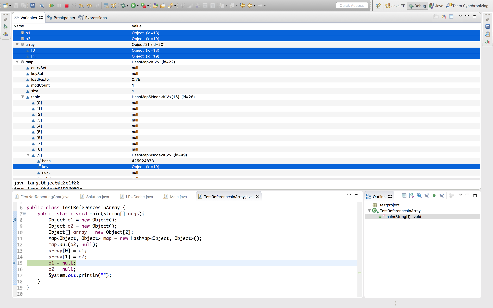
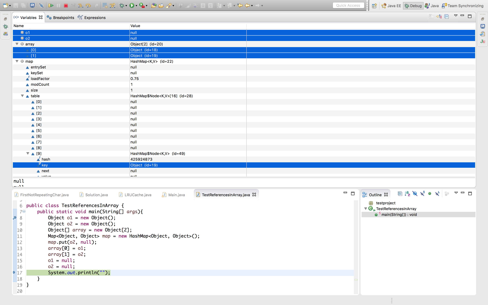

<!DOCTYPE html PUBLIC "-//W3C//DTD HTML 4.01//EN" "http://www.w3.org/TR/html4/strict.dtd">
<html>
<head>
  <title>Java中的引用到底是个啥</title>
</head>
<body>
<h2><b>踩坑：[Java基础]Java中的引用到底是个啥？</b></h2>
<p>在研究JDK7及之前版本的HashMap在多线程下resize为啥会产生死循环的问题的时候看到HashMap的实现代码突然想到了这个问题。</p>
<p>看这段代码：</p>
<p><pre>do {</pre></p>
<p><pre>    Entry<K,V> next = e.next;</pre></p>
<p><pre>    int i = indexFor(e.hash, newCapacity);</pre></p>
<p><pre>    e.next = newTable[i];</pre></p>
<p><pre>    newTable[i] = e;</pre></p>
<p><pre>    e = next;</pre></p>
<p><pre>} while (e != null);</pre></p>
<p>主要是循环体中的最后两句：</p>
<p><pre>    newTable[i] = e;</pre></p>
<p><pre>    e = next;</pre></p>
<p>e是Entry对象的引用，那么将e存入newTable[i]中的时候，数组中存的到底是个啥呢？如果存的是e本身，那e在执行下一句e = next;的时候已经变了啊，那程序就不对了。所以不管e是个啥，肯定存的不是e本身。</p>
<p>其实意思我们都明白，但是就是不好描述。有人大概说引用就是地址，那如果是地址的话，为什么在e指向另一个对象，即这个地址已经发生改变了的时候，数组中的引用的指向不变呢？说白了引用是地址的这种解释还是不够清晰。</p>
<p>那我贸然猜想出一种解释，引用是一种只能被复制的东西。也就是说，世界上没有一个引用可以出现在内存中的两个位置。</p>
<p>也就是说在执行上面两句的时候内存中发生了什么？newTable[i] = e;的时候，数组中存入了一个新的引用，这个引用指向e所指向的对象。e = next;的时候，e指向了next所指向的对象。引用只有一种操作，就是指向，而且引用没有销毁，引用的生命周期和对象是一样的，你只能不用它了，但却不能销毁它，想回收引用只能回收对象来实现。（对象的回收时机判断不就是没有任何引用引用它吗？这不成了蛋和鸡的问题了么？这就涉及强引用弱引用啥的那部分了，等我看明白再回来解释这个问题。）</p>
<p>为了验证这个理论我写了个小Test：</p>
<p><pre>public class TestReferencesInArray {</pre></p>
<p><pre>	public static void main(String[] args){</pre></p>
<p><pre>		Object o1 = new Object();</pre></p>
<p><pre>		Object o2 = new Object();</pre></p>
<p><pre>		Object[] array = new Object[2];</pre></p>
<p><pre>		Map<Object, Object> map = new HashMap<Object, Object>();</pre></p>
<p><pre>		map.put(o2, null);</pre></p>
<p><pre>		array[0] = o1;</pre></p>
<p><pre>		array[1] = o2;</pre></p>
<p><pre>		o1 = null;</pre></p>
<p><pre>		o2 = null;</pre></p>
<p><pre>		System.out.println("");</pre></p>
<p><pre>	}</pre></p>
<p><pre>}</pre></p>
<p>debug了一下：</p>
<p><a href="imgs/Java中的引用到底是个啥_img1.png"></img></a></p>
<p></p>
<p><a href="imgs/Java中的引用到底是个啥_img2.png"></img></a></p>
<p>从内存状态中能看出来，在引用o1和o2改变了指向以后，数组中和Map中的引用都没有受到影响。</p>
<p>感觉说的还是不太清晰，基础不好，也许以后有更透彻的理解，到时再说。</p>
</body>
</html>
